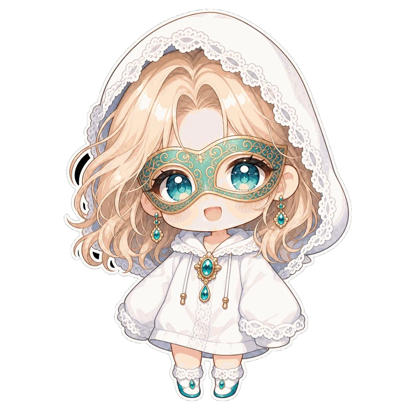

// Streaming Tech
APEXカスタムマッチ用
スコアボード
HTML単体・20チーム対応・キル＋順位ポイント自動計算・キャラピック集計まで統合。元プロ選手主催のカスタムマッチで採用実績あり。
AIワークフロー設計 ／ キャラクターIPクリエイター
AIチームで回す、一人スタジオの設計者。
配信者・クリエイター向けに、AI活用と業務基盤の構築・運用設計を提供。「自分でも使うクリエイター兼開発者」だからこその現場感のある提案が強みです。

Imperial SEED は、そまり が運営する個人事業です。
Twitch・YouTube での配信、LINEスタンプ販売、オリジナルキャラクターIP制作を並行運営しながら、ChatGPT・Claude などのAI活用と、Notion による業務基盤の構築・運用設計を提供しています。
「実際に動かす現場」の視点で設計を組み立てるのが強み。机上の理論ではなく、毎日自分が使うツールを作るマインドセットでクライアントの業務を組み立てます。
スキル領域：
・AI活用ワークフロー（ChatGPT / Claude / Grok / Gemini の統合運用）
・Notion 設計・運用（コンテキスト管理・財務管理・キャラマスター）
・配信テクノロジー（OBS自動化・カスタムパネル・字幕翻訳）
・キャラクターデザイン・LINEスタンプ制作
・HTML / CSS / JavaScript / Automation
・ブランディング・クリエイティブディレクション
Imperial SEED は「AI3人＋私」で回している一人スタジオです。設計と企画は Claude（セルたん）、実装と画像制作は Codex（佐野）、ローカル作業と仕上げは Claude Code（なおやん）が担当。私は企画と判断に集中し、仕事は「目的・入力・出力・制約」をそろえた発注書でAIに渡します。
IP育成・ファン獲得・収益化・自動化の4本柱で、クリエイターが一人でも続けられる基盤をつくること。
猫又キャラクター「ソマリ」、APEX×猫又の「そまキリー」、AI生成ゲームBGMの「Suiren Game BGM」を並行して運営しています。
外部のセキュリティ情報（npmのサプライチェーン攻撃など）を自分で調べ、作業環境の防御設定まで入れて運用しています。
企画・設計・実装・運用まで一気通貫で対応します。スポット相談から継続契約まで、規模感に合わせて柔軟に組めます。
業務基盤の整備、AI活用の運用設計、コンテキスト管理システム構築。「動き続けるNotion」を作ります。
カスタムマッチ集計・配信オーバーレイ・OBSパネル等、配信現場の課題を解決するWebツールを制作。
OBS自動化、配信パネル自作、テクニカル課題の解決。「配信者の現場感」がわかる設計を提供。
企画・制作・販売登録までワンストップ対応。複数シリーズの販売実績あり。
企画から実装、運用までを自分の手で回した制作物です。
HTML単体・20チーム対応・キル＋順位ポイント自動計算・キャラピック集計まで統合。元プロ選手主催のカスタムマッチで採用実績あり。
obs-websocket-js v5でブラウザベースの配信パネルを自作。シーン・録画・マイク・BGMをワンクリック制御。
複数AI間でコンテキストを共有する13ファイル構成のシステム。Notion⇔ローカル同期スキル化済み。
手書き・アプリのカレンダー写真をAIが読み取り、予定リスト（JSON）化してGoogleカレンダーへ終日イベント＋色分けで一括登録。職場固有の情報を扱わないプライバシー設計。1ヶ月分の転記が数分で完了。
猫キャラを軸にしたLINEスタンプを4シリーズ・9パック展開。企画・制作・販売登録までワンストップで運用。
作業の「型」をAIに覚えさせる自作スキルを9本運用。投稿案づくり、教材からの学び抽出、会話ログの記録、アクセス解析の取り込みなどを半自動化しています。代表作の「学びウェポナイザー」は、教材を渡すと「学びの整理 → 自分の環境への改善案 → 記録 → 投稿案」まで一度に出力。自分で試していない内容は投稿に回さない検証フィルタ付きです。
コミュニティで流れる知見をカードにして貯めるWebアプリ。メモは開いた人のブラウザの中だけに保存し、サーバーには送らない設計です。v3ではAIによる自動タグ付けと一行要約を追加。APIキーがなくても、コピペで同じ機能が使えます。
Discordで「/stamp」と打つと、キャラクターのスタンプ画像を投稿できるBot。Cloudflare Workers上で稼働中で、スタンプの種類を順次追加しています。
配信の収益データ（CSV）を、Notionの財務管理データベースへ自動で取り込む仕組み。手入力の転記をなくし、月ごとの数字をすぐ見られるようにしました。
OBS・Stream Deck・Pythonを連携させ、配信の開始と終了まわりの決まった作業を自動化。配信者が「配信そのもの」に集中できる環境をつくっています。
Xの投稿はすべてNotionのデータベースに記録し、AIに集計させて改善しています。投稿案は「テーマ × 味付け × 形式」の3層構造で生成し、リアクション用のちびキャラ画像40種もAIチームで量産。サイトのアクセスも Clarity と Cloudflare で毎週計測しています。
思いついたらすぐ形にした小物たち。1〜2分で出来上がったドット絵エディタ、Claude Codeのコマンド帳、AIメンバーの「できること一覧」（12カテゴリ47項目、検索・絞り込み付き）など。
Microsoft Copilot と相談しながら作った、ブラウザで動く小さな効率化ツール。2つの文章の違いを探せる「文言検索ツール」、ハイフンや全角・半角の違いを無視して番号を探せる「表記ゆれ無視の番号検索ツール」、条件を選ぶだけで注意事項まで入った案内文が出る「料金計算ツール」。コピペとつぎはぎで5〜15分かかっていた作業が、数秒で終わるようになりました。
参加しているAIコミュニティ向けに、主宰者さんをモチーフにしたデフォルメキャラのDiscord絵文字を制作。キャラの設計は私、表情パターンの量産はAIチームで分担しました。
AIを道具として使うだけでなく、対話の相手としてどう向き合ってきたかの記録です。AIと交わしたやりとりや、AIに作ってもらった画像を、少しずつ貯めていきます。
読み込み中…
読み込み中…
読み込み中…